Inventory intelligence / published
FACON FBA Weekly Dashboard
A multi-source inventory dashboard that combines Odoo sales-order lines with FBA, US warehouse, and Karachi inventory sheets. The workflow normalizes the source tabs, computes the reporting model, and serves a generated HTML dashboard by webhook.
System flow
- Trigger the report through a webhook
- Retrieve Odoo sales-order line data
- Find the latest FBA spreadsheet and read stock data
- Read visible US warehouse and Karachi inventory tabs
- Compute the unified dashboard model
- Build and return the final HTML dashboard
What this proves
- Published workflow with every source and transformation visible
- Combines ERP data and multiple warehouse spreadsheets
- Latest-sheet discovery keeps weekly reporting maintainable
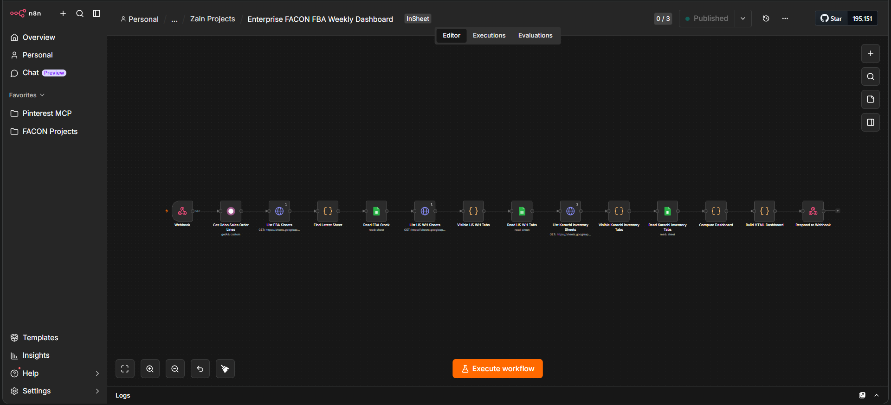
Supporting proof
14 views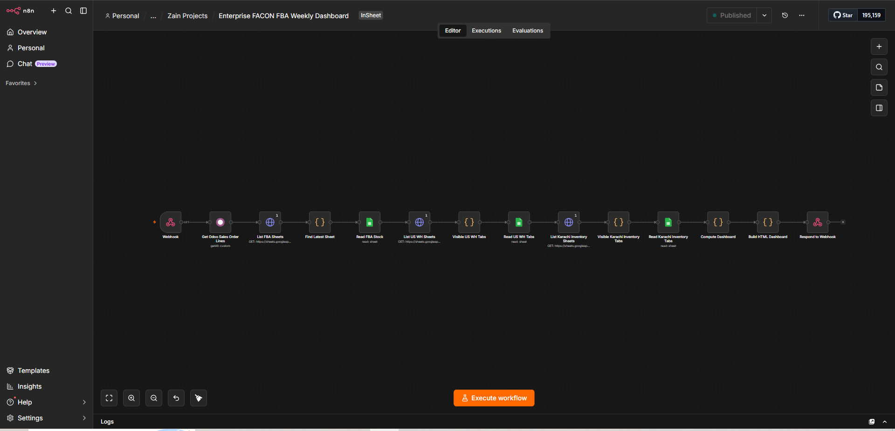
Published n8n workflow: Odoo + three inventory sources → generated dashboard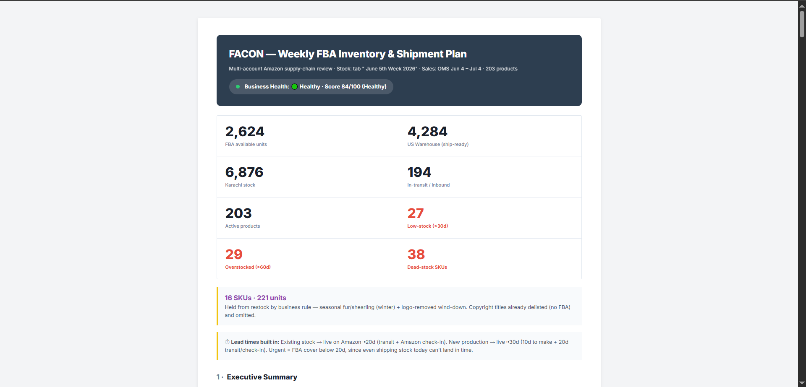
Live FACON FBA dashboard output · view 01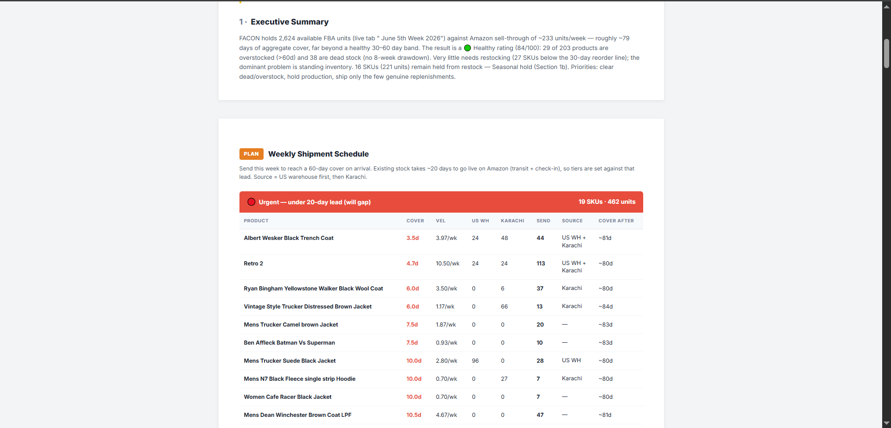
Live FACON FBA dashboard output · view 02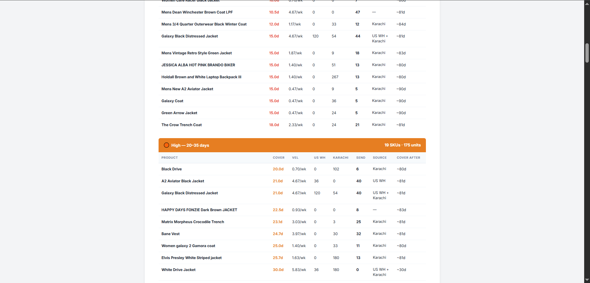
Live FACON FBA dashboard output · view 03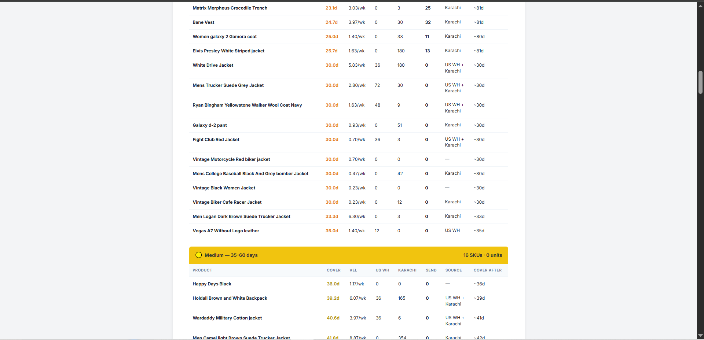
Live FACON FBA dashboard output · view 04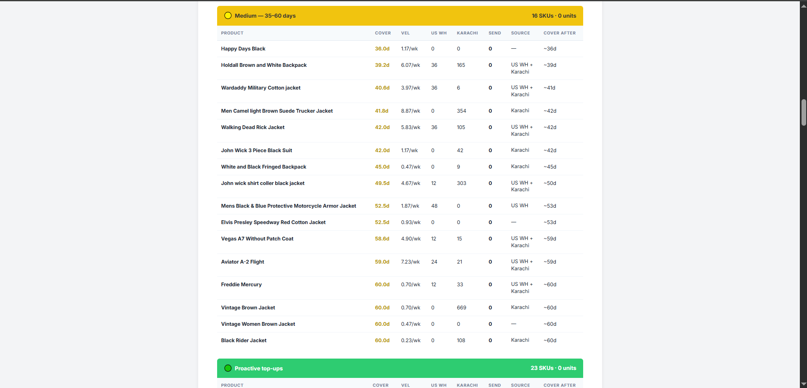
Live FACON FBA dashboard output · view 05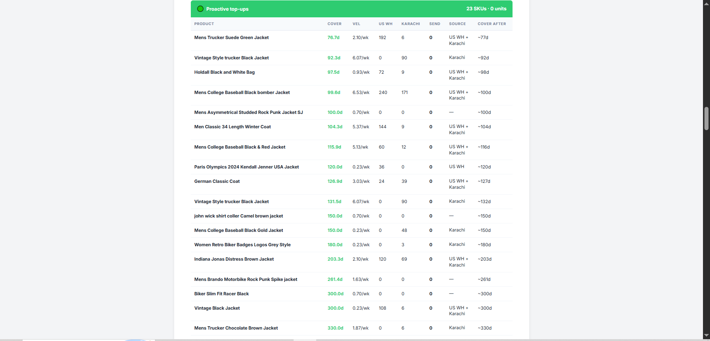
Live FACON FBA dashboard output · view 06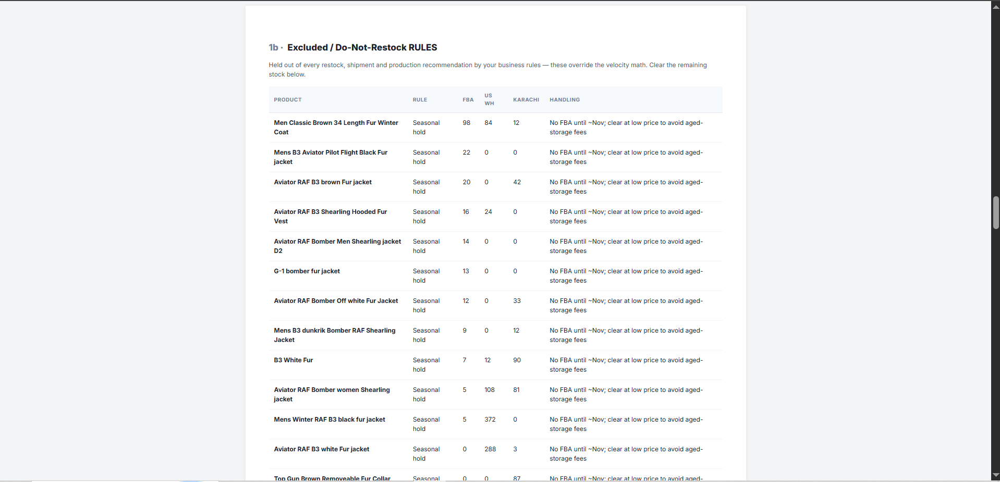
Live FACON FBA dashboard output · view 07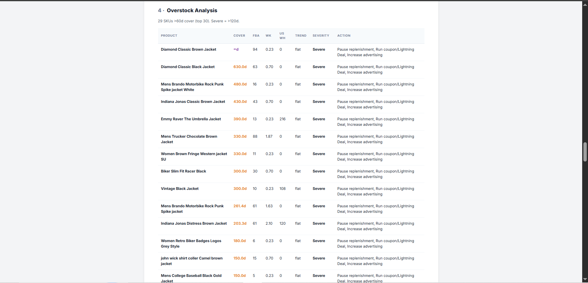
Live FACON FBA dashboard output · view 08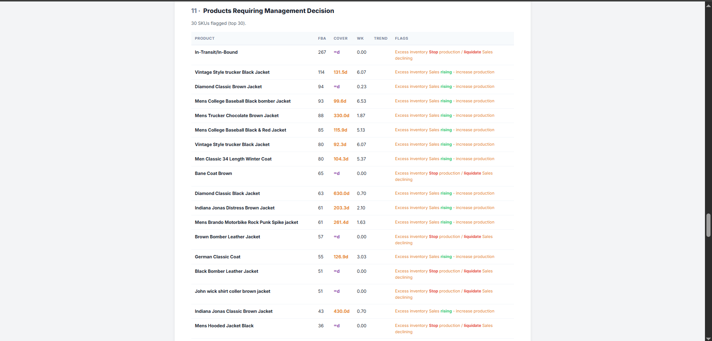
Live FACON FBA dashboard output · view 09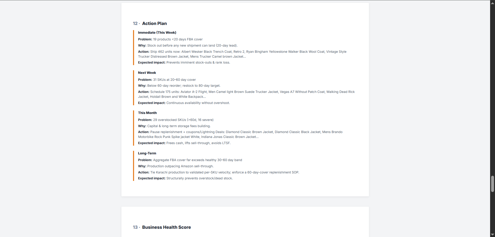
Live FACON FBA dashboard output · view 10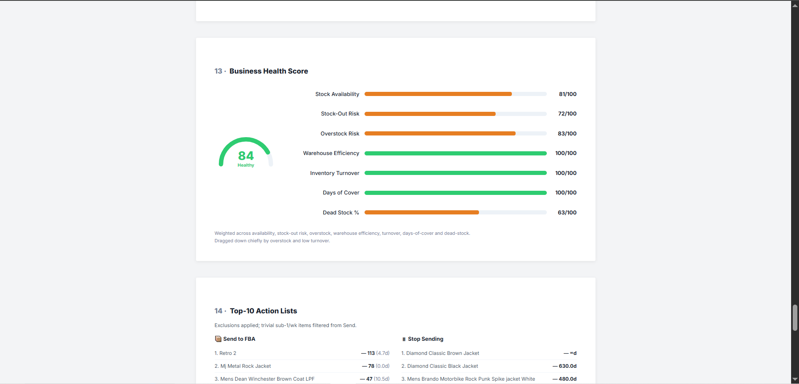
Live FACON FBA dashboard output · view 11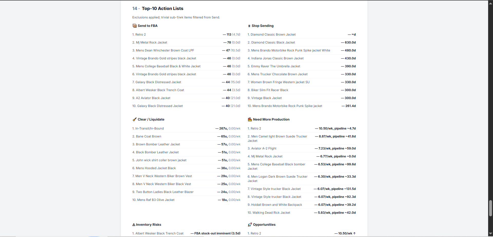
Live FACON FBA dashboard output · view 12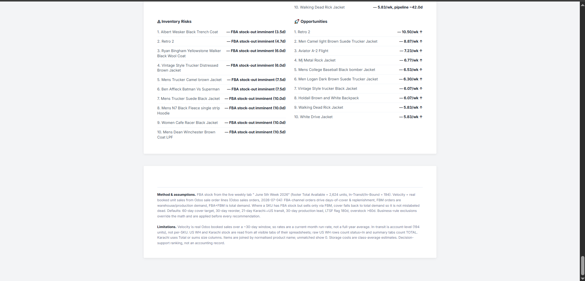
Live FACON FBA dashboard output · view 13